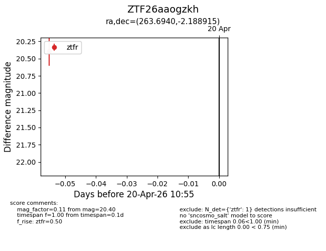
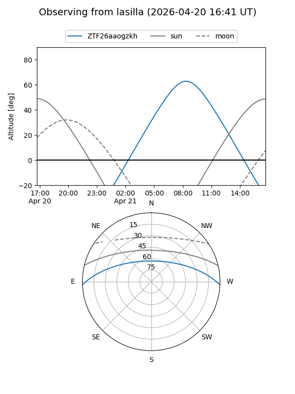
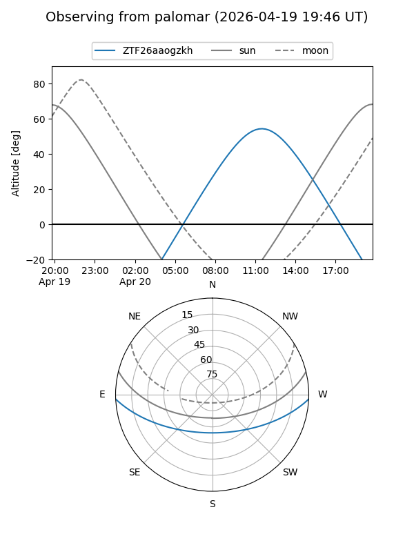

ZTF26aaogzkh
Target ZTF26aaogzkh at 2026-04-20 11:05
Aliases and brokers:
FINK: link
Lasair: link
ALeRCE: link
alt names
ZTF26aaogzkh (ztf,fink_ztf)
Coordinates:
equatorial (ra, dec) = 263.6940,-2.18892
equatorial (HMS+DMS) = 17:34:46.56,-02:11:20.09
galactic (l, b) = (21.9255,+15.93531)
Flags:
Photometry:
last ztfr=20.40
1 ztfr detections
Lightcurve

Visibility


Additional plots